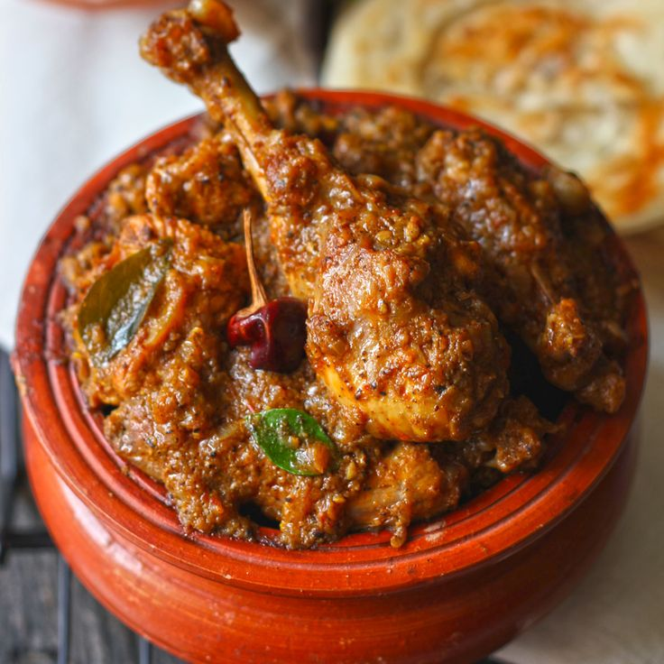

Chicken Curry Recipe
Chicken curry is a comforting dish, full of rich flavors and spices. Here's a simple yet delicious recipe for a classic Indian-style chicken curry:
Ingredients:
For the Marinade:
- 500 grams chicken (bone-in or boneless, as preferred), cut into pieces
- 1/2 cup yogurt
- 1 tsp turmeric powder
- 1 tsp red chili powder
- 1 tsp ginger-garlic paste
- Salt to taste
For the Curry:
- 2 tbsp oil or ghee
- 1 large onion, finely chopped
- 2 medium tomatoes, pureed or finely chopped
- 2 green chilies, slit (optional)
- 1 tbsp ginger-garlic paste
- 1/2 tsp turmeric powder
- 1 tsp red chili powder (adjust to taste)
- 1 tsp coriander powder
- 1 tsp cumin powder
- 1/2 tsp garam masala
- 1/2 tsp kasuri methi (dried fenugreek leaves) (optional)
- 1 cup water (or as needed for gravy consistency)
- Fresh coriander leaves for garnish
- Salt to taste
Instructions:
1. Marinate the Chicken:
- In a large bowl, mix together yogurt, turmeric powder, red chili powder, ginger-garlic paste, and salt.
- Add the chicken pieces to the marinade and coat them well. Let the chicken marinate for at least 30 minutes (or up to 4 hours in the refrigerator for better flavor).
2. Prepare the Curry Base:
- Heat oil or ghee in a heavy-bottomed pan over medium heat.
- Add the chopped onions and sauté until golden brown. This may take around 8-10 minutes.
- Add the ginger-garlic paste and green chilies, and sauté for another 2 minutes until the raw smell disappears.
- Add the chopped or pureed tomatoes and cook until the oil separates and the tomatoes turn soft and mushy (about 5-7 minutes).
- Now, add turmeric powder, red chili powder, coriander powder, and cumin powder. Cook the spices for 2-3 minutes until they are well blended and aromatic.
3. Cook the Chicken:
- Add the marinated chicken pieces to the pan. Sauté for 4-5 minutes on medium heat until the chicken turns white and is coated with the masala.
- Add water to the pan to create the desired gravy consistency (about 1 cup for a medium-thick curry). Stir well.
- Cover the pan and cook on low-medium heat for 20-25 minutes, stirring occasionally. The chicken should be tender and fully cooked.
- Once the chicken is cooked, add garam masala and kasuri methi (if using). Mix well and simmer for 2-3 more minutes.
4. Garnish and Serve:
Garnish the chicken curry with fresh coriander leaves. Serve hot with rice, roti, naan, or parathas.
Enjoy your flavorful homemade chicken curry!